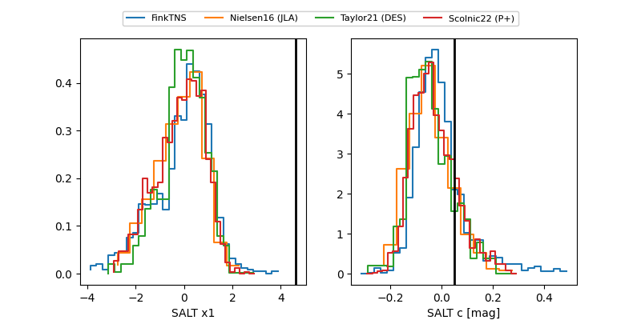

FINK: ZTF25abmvhqn
Lasair: ZTF25abmvhqn
ALeRCE: ZTF25abmvhqn
ZTF25abmvhqn (ztf,fink)
equatorial (ra, dec) = (351.3820,+13.83613)
galactic (l, b) = (93.2938,-44.03607)

last ztfg=20.45, ztfr=20.16
4 ztfg, 2 ztfr detections